Ultimate Tech Scaling Guide

About me

I’m fractional CTO, Software engineer and hands-on engineering manager. I was always passioned about building highly scalable, secure and robust applications.
What this guide will cover
- Why do you need to scale?
- What do you need to scale?
- Complete scaling techniques list
- Process of designing any system
- Design few apps together
Why scaling?
Your business is growing, and there are so many users on your site that things are starting to slow down. The amount of data your business needs to store is increasing, and servers cannot handle the load.
During the holidays or other events, the load on your application or website can increase more than ten times. If your app has vulnerabilities or weaknesses, many users will find them.
For SaaS platforms, scaling problems can lead to lower revenue than expected. You may not be able to onboard new clients quickly or significantly expand your client base.
Usually, a bad user experience causes you to lose clients. Messages, notifications, or emails are not delivered to end users. Visitors must repeat certain steps to complete the business flow.
You start losing important data. User invoices, consent forms, or transactions can become legal issues.
Pages load slowly, network connections time out, and your servers struggle under heavy load.
You need to keep everything running and ensure the user experience is fast and smooth – speed and smoothness are features.
Amazon found every 100ms of latency cost them 1% in Sales!
“A one-second delay in page response can result in a 7% reduction in conversions."
along with
“47% of consumers expect a web page to load in two seconds or less.”
What do you need to scale?
From the top overview it’s always about CPU, Memory or I/O because all apps or services live on hardware. In the cloud or your server room.
But to understand where losses or slowdowns happen you have to know what is going on in your system starting from user input in the browser or application till the database query and back as detailed as possible.
You tweaked all possible components in your code and server settings but it’s still not enough. Let’s talk about possible techniques which will allow you to scale your app even more.
Further on we will talk concepts, no technology specifics, no tooling, pure fundamental concepts which can be implemented in any system.

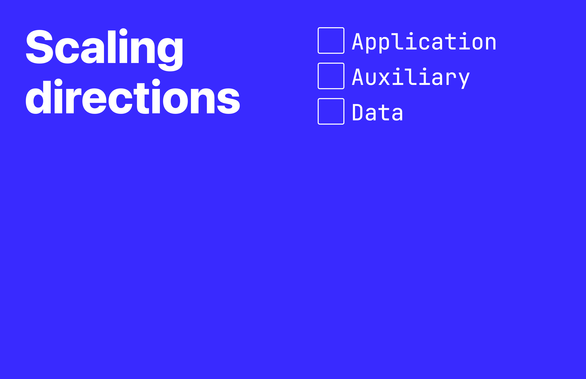
The cube of scalability is our Holy Grail. It nicely and simply describes how to achieve “nirvana” - infinite scaling. But it covers mostly application level. Based on that I split all techniques in 3 parts. Application level, Auxiliary level and Data level.
Application level - holds your entire business logic, usually it’s ruby or php scripts which are running on your server.
Auxiliary level - kind of helper in scaling world. It’s not tied to your business logic or data.
Data level - usually holds the state of your program/application which might be database or other kind of storage.
Let’s go through a complete list of techniques which covers all aspects of scaling cube and even more. ➡️
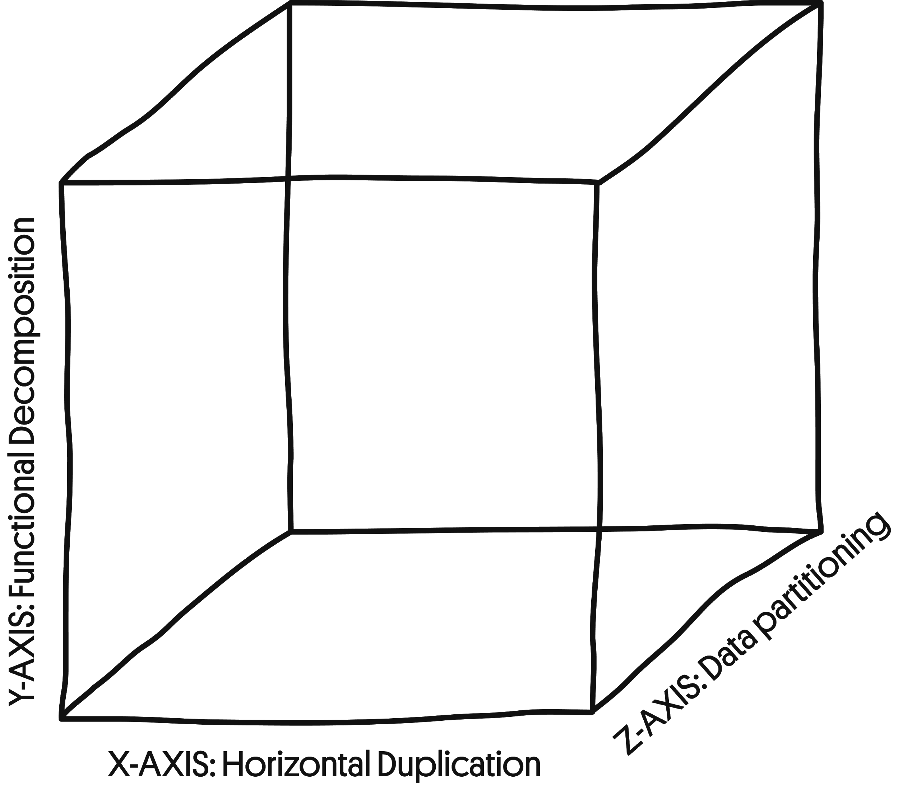Vertical scaling
Vertical scaling - commonly used and the most simple technique. Just add more power to your machines.
Database ran out of disk space? - Add more gigabytes.
Server with application became slow? - Upgrade from medium to large instances.
Implications of this technique are temporary. But it easily allows you to win some time to implement more fundamental solutions.
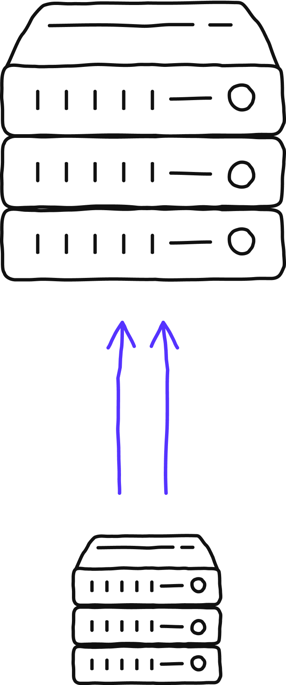Horizontal scaling
Horizontal scaling means to run your logic on multiple machines with load balancer on top of that. It will allow you to gain extra power.
Let’s say your app started dropping some requests or just simply became slow. And upgrading to a bigger instance is quite pricey or your app already on the biggest instance.
You can run your app on multiple machines during rush hours. It will allow you to load balance between them and solve issues with slow requests. As extra plus it will make your system more fault tolerant. One instance died? - Not a problem, you have one more instance which will take the load. And your team will have time to understand why it happened and fix it.
This technique has few requirements to your backend application:
Your app should be stateless, user requests should be executed the same way on server “a” and server “b”.
Try to eliminate shared components between multiple servers. Otherwise it will add a common point of failure and possible bottleneck in the future. Bottleneck is a component which slows the whole system down. But do we really need to process everything in real time?
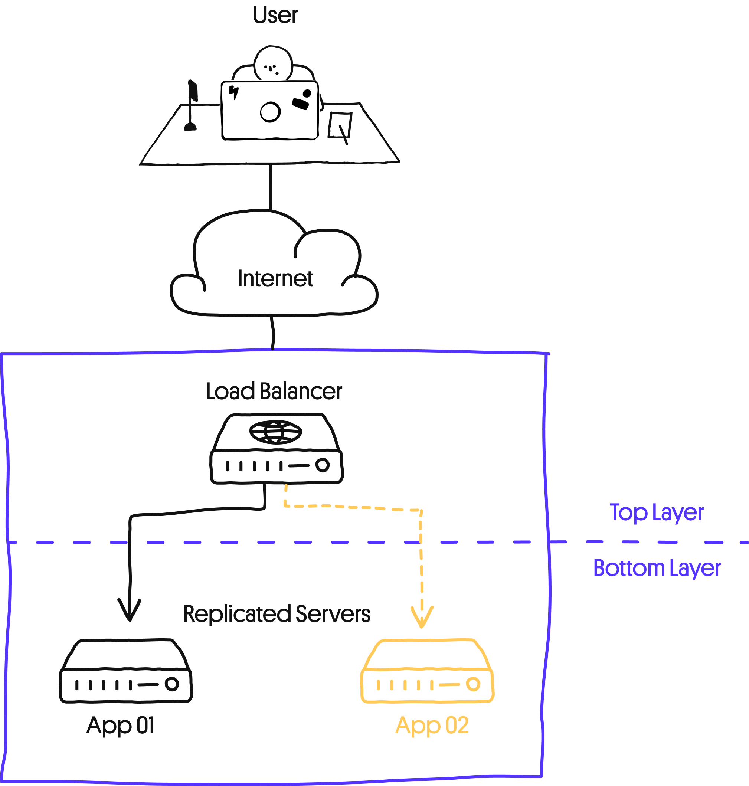Postponed execution
Postponed execution - is a really nice and elegant technique with entry level.
As I mentioned before, you don’t need to do everything in real time. You can create a task and execute it later.
Send an invoice - can be done in a few minutes after clicking the payment button.
When your post should be visible on instagram? - Immediately, don’t think so.
This technique will allow you to offload non critical functionality to be able process requests faster.
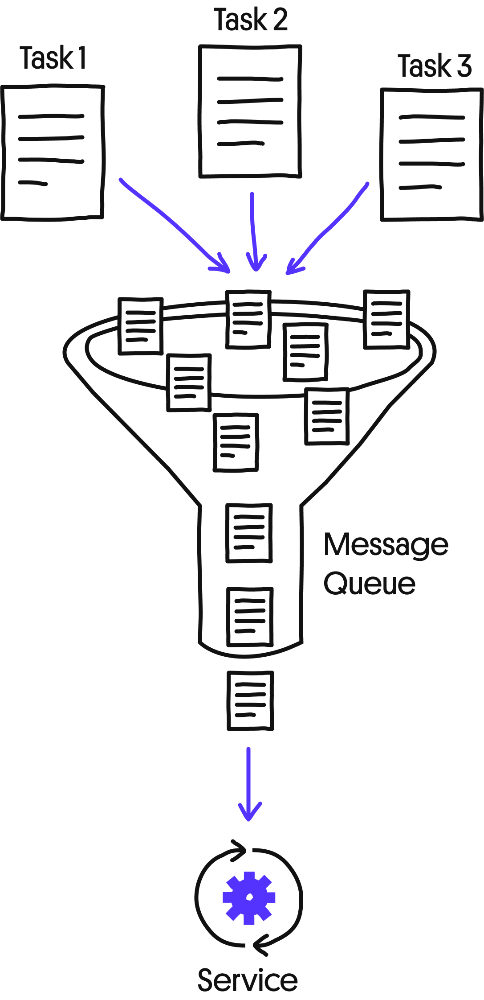Asynchronous processing
Similar to postponed execution but done in parallel. Same task split across several machines.
Send 5mln notifications or send millions of emails, just split the task and send it to multiple machines.
This technique requires some modification to your infrastructure and you will have to be very careful few failures. From my experience even a simple task might have invisible bugs which might collapse something. Once I sent 8 emails instead of 1 to a few users because of a uid collision.
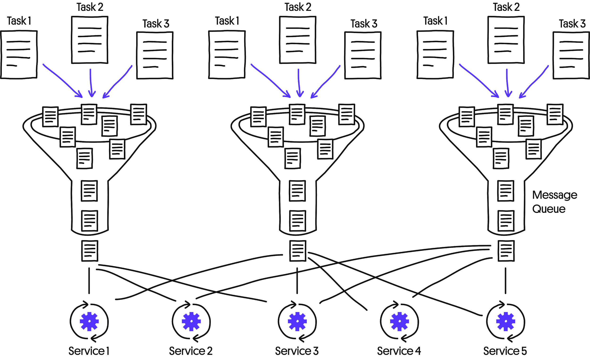Functional separation
Functional separation involves isolating different functionalities onto separate machines, allowing each to be optimised independently. This technique enhances maintainability, performance, and fault tolerance. It also supports concurrent development by enabling teams to work on different parts of the system simultaneously.
- Authentication Service: Manages user login and registration.
- Content Management Service: Handles content creation and storage.
- Recommendation Service: Provides personalised user recommendations.
Service-oriented architecture
This is one of the most powerful architectures. The entry level is a bit higher than previous options, but it offers a lot of flexibility in development, deployment, and testing.
The idea is simple: imagine you have a website that serves articles, allows users to follow others, has authentication, and includes a commenting system. You can split all of these into separate services. Your system will become more fault-tolerant. For example, if the weather service on a website like Yahoo goes down, everything else will remain fully functional.
However, if your team lacks experience with SOA, it’s better to seek advice from a company. Also, talk with product managers and other stakeholders to clearly define the business value and strategic goals of each service.
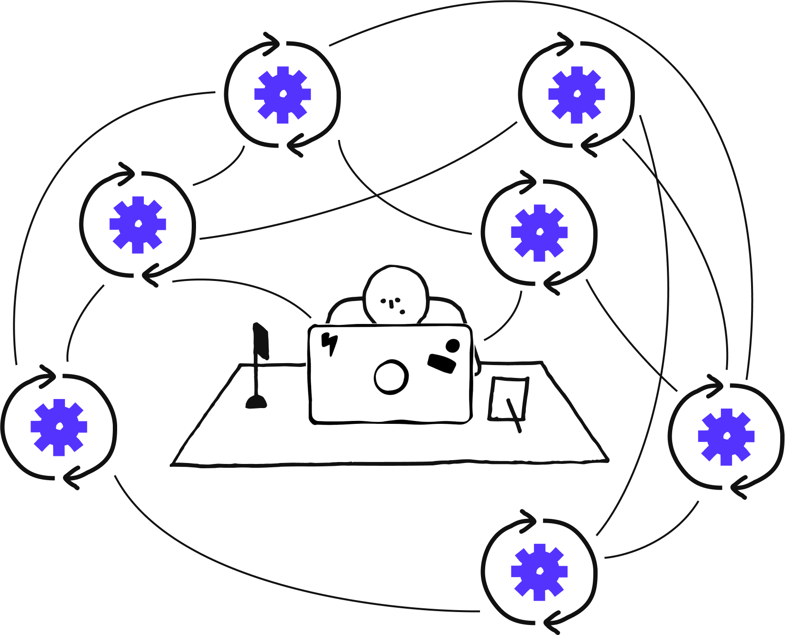- Adds communication overhead
- Split logic and data
- Concurrent deploys and development
- Making system more fault tolerant
- Individual scaling of components
Parallel execution
This is rocket science. This technique is similar to asynchronous queue but done in real time by splitting request and processing it on several machines.
I know not more than 2-3 companies that use it in the business logic layer. Google one of them, when you hit the search page your request goes to dozens or even hundreds of servers. Your request is split, servers processing it, after that collect all results and return back to the user in real time!
If anyone used map reduce you probably know what I was talking about. If you know how to bake this do it, if not think about other options.
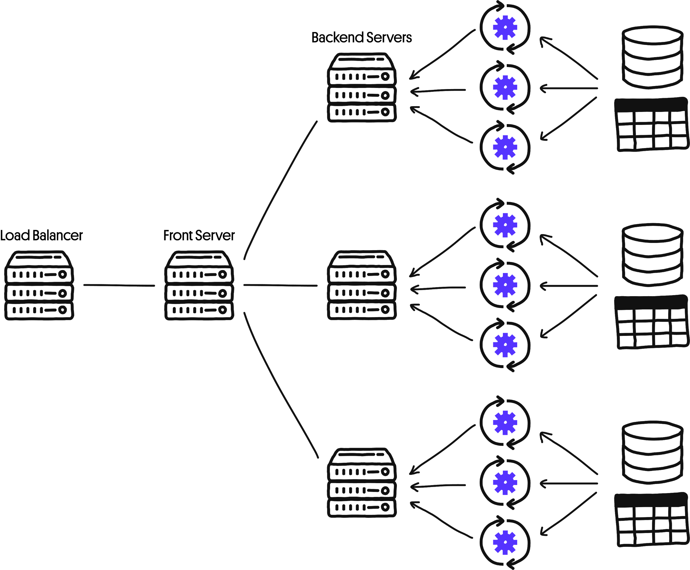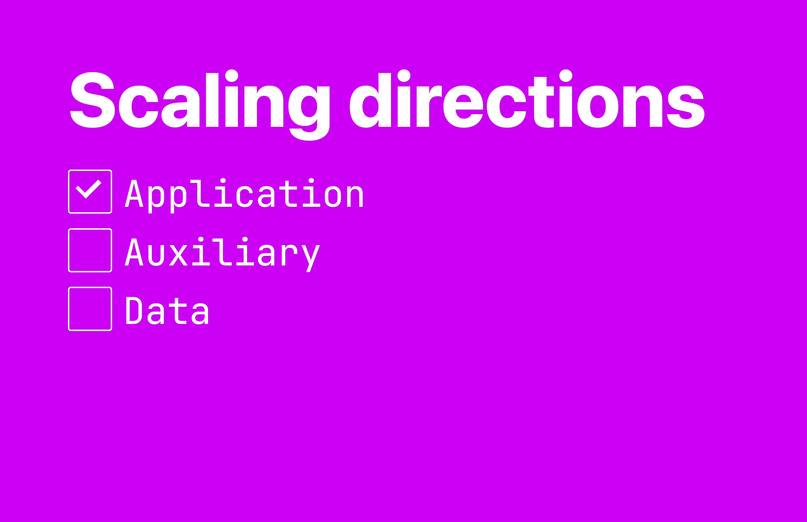
Fat client
So we covered possible ways to scale your application level, let’s talk about your clients. Fat client - simply means to move as much as possible to the client side.
Instead of server side rendering, move everything to the client. Send lightweight json or graphql query and render views using its data. Your client can go to each service asynchronously to provide better user experience. But this trend to be reversed at the moment and static content seems to rise.
Fat client can be a great save of your resources. Let me explain why: c5.large Amazon instance vs IPhone X. Amazon c5.large - 2 cores 4gb of ram, iPhone - 6 cores 4gb of ram. Yes, different process architecture, but as powerful.
You can even move the load balancer to the client side, as I know twitter X is doing it.
Caching
Everyone knows about caching. I will just add a few words about it.
From what I saw in some companies, cache is slowing their system down. Let’s imagine that to go to cache is 50ms and to go to database is 200ms. You benefited 5 times. But what if your app hit cache less than in 50%? Your system becomes slower, instead of 50 or 200ms it spends 250, plus storing useless results in memory.
Always calculate the hit rate. And your system should work without cache, if it is not able to start without cache something is wrong in architecture.
We already covered application level, auxiliary level
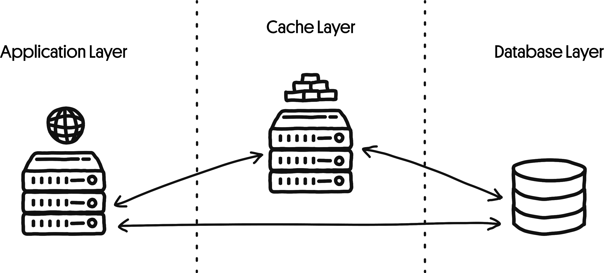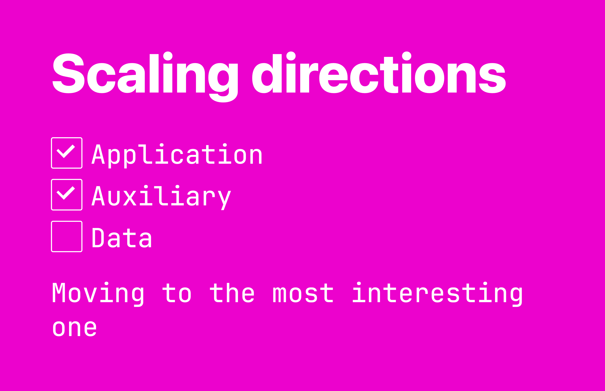
Sharding
Sharding - in a way horizontal scaling of the database.
Let’s say we have a database where we store subscribers to our newsletters. 10 million subscribers, plus their profiles, preferences etc. It can’t fit in one database. Let’s shard it by primary id or some hash. Move 5mln to one database and 5to another.
But from time to time you will have to do manual migration and likely freeze your system for some time. To be more prepared you can have a look on virtual sharding.
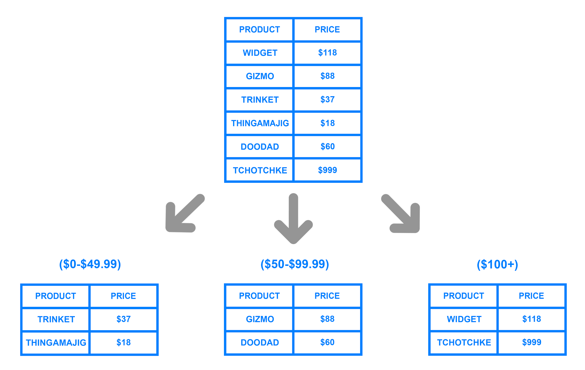Sharding :: Virtual sharding
The idea of this technique is to prepare your system for high load. As we talked at the beginning even lost consent might be a critical issue for the business.
Let’s say we are building a social network, messenger or dating app. You know that at the beginning you will have 10.000 people. After the first marketing campaign you expect 150.000 and so on. To be prepared for such a load of data, just shard your database up front and create 500 databases in one physical database. Once one is full, move it to the physical server.
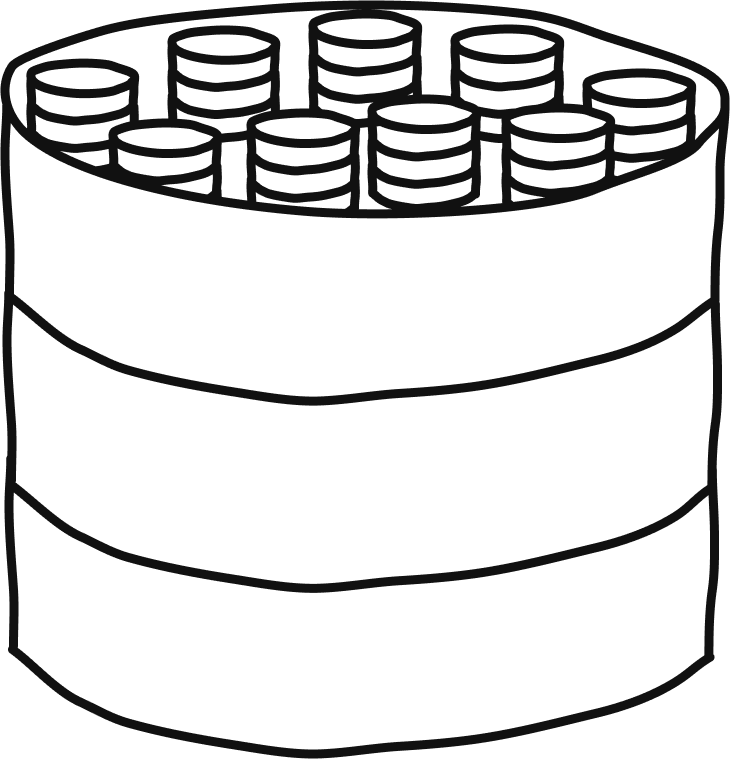Sharding :: Central dispatcher
This pattern allows you to control your shards. In a way it works as a proxy between your app and databases.
For example, on one of your shards you spotted 1mln bots or scam accounts and truncated them. After that you can say to the central dispatcher to load new users there.
Central dispatcher adds quite some complexity and coupling to one component, but if you have a specific need - why not.
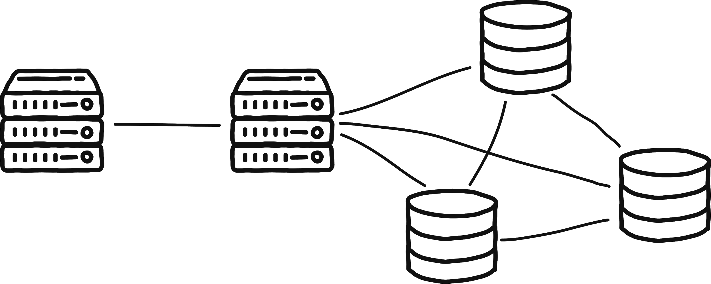Replication
We’ve talked about heavy write and storing data, but usually web projects have much more read queries than write. The well known approach - replication.
There are a lot of cases, let’s take the simple one. You publish an article, store it in a database. And how many users will request it? Thousand, 10 or million.
A lot of databases have native instruments which you can use. Principe is next: you have the main database (master) and slaves (replications). Write queries go to master and read to slaves.
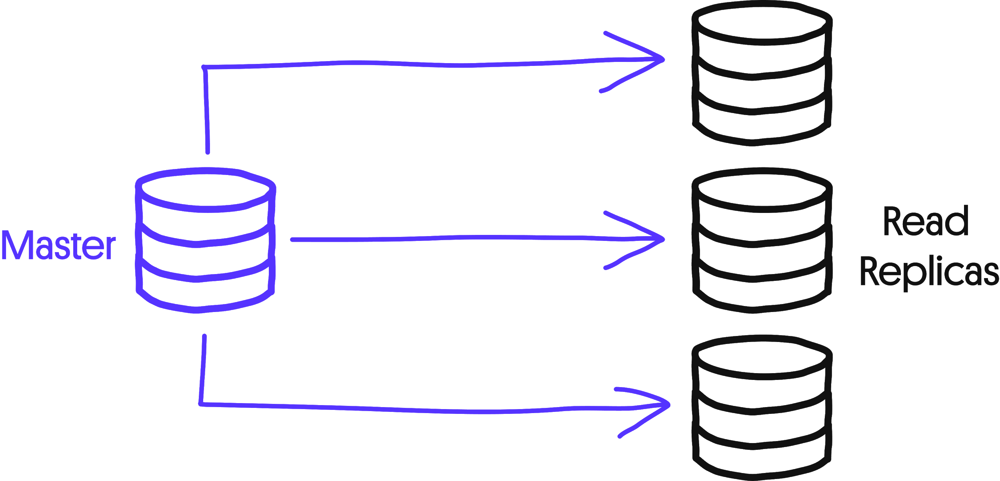Partitioning
Functional or logic separation of your data.
Or as some people from micro services world call it “Polyglot Persistence”.
Articles are stored in database 1 and comments are stored in database 2. And as well this pattern allows you to choose best fitted technology for each use case.
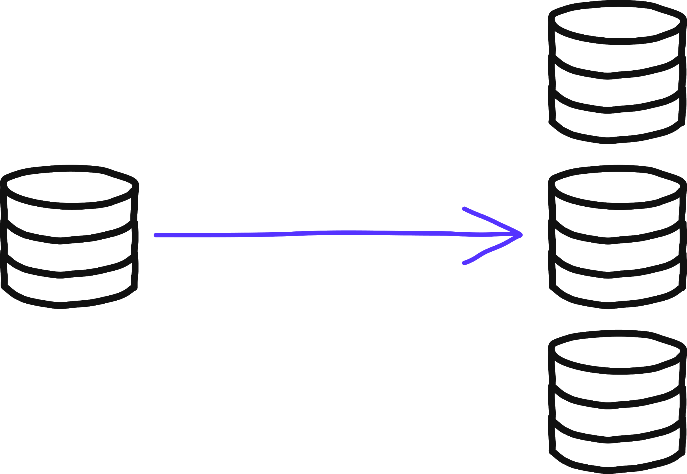Denormalisation
This technique is heavily used in our system. It does not require introducing any new tools or services. Denormalisation of database is a normal process in any web project.
You are reading 10 times more than writing, optimise your data to read it much more easily and efficiently.
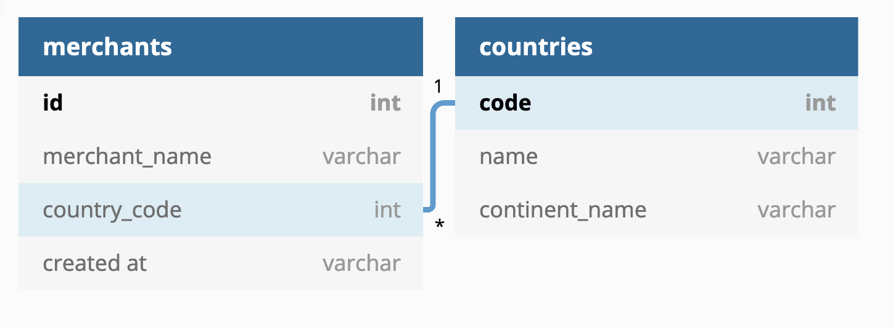 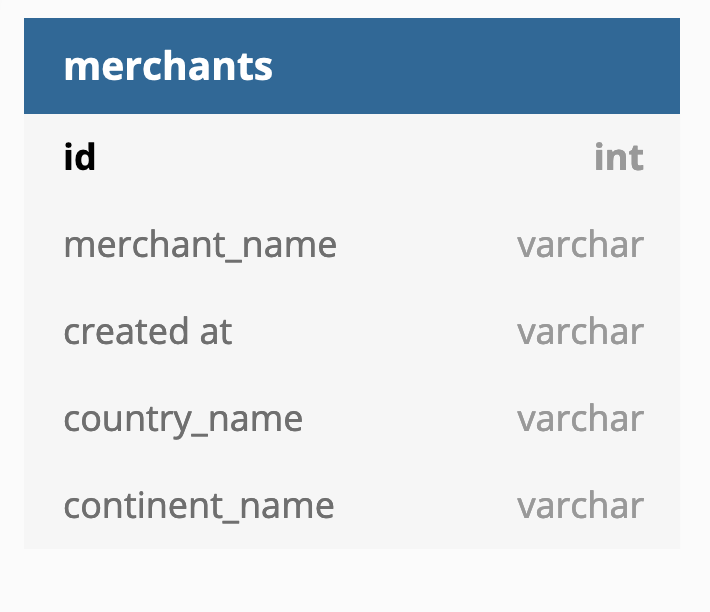Redundancy
Redundancy is similar to the denormalisation process except you do not change the form of data.
Let’s say you have the latest articles which always have a high volume of views - store them in a separate table with 10 rows. Another lates article came out - store it in your main storage and update your new small table for further better performance.
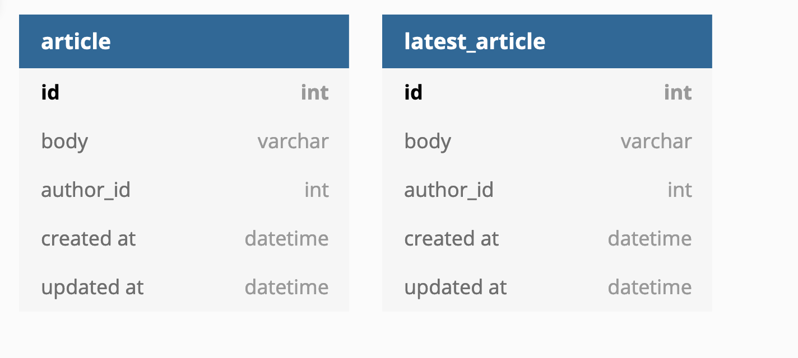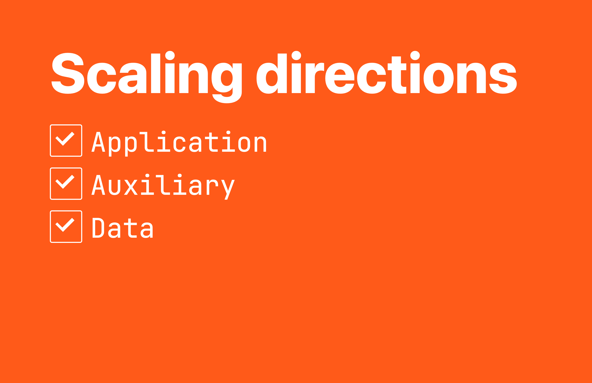
How to design?
-
BUSINESS LOGIC We describe the business logic of the future system, including potential ways of developing the system. Outlining key features and functionalities.
-
THE NUMBERS We calculate the volume of data stored and the speed of their increment. Choosing a critical path - storing, writing or reading data?
-
DEGRADATION Determine the acceptable degree of degradation of the system.
-
DATA We will construct the data movement scheme and make a decision which of the features of the designed system we will use.
-
SCHEME We are designing a data storage scheme.
Let’s design some apps
Job applications
Requirements
- Business logic
- Read fresh vacancies
- Read vacancies from archive
- Recruiters can publish and update vacancies
- Numbers
- Each vacancy ~15-30 kb
- Store all vacancies from the 2000
- Each day 5k vacancies ~2mln per year (~40gb), 20 mln per 10 years, (~400gb)
- Degradation degree
- No
- Data
- Reads much more often than writes
- A lot of views goes to latest vacancies
- Majority views goes to vacancies from last week
Design
- Sharding?
- Data not equal
- No
- Redundancy
- Write to two databases (hot and cold)
-
Cache hot database
-
Partitioning in archive database
- By date (example)
Dating app
Requirements
- Business logic
- Fill profile (profiles have common structure)
- Email and password for login
- Users can see profiles of others
- Numbers
- 150-250 mln users
- Each profile 10kb (2.000gb)
- 5 billion hits per day
- Degradation degree
- No
- Data
- Reads much more often than writes
- Equal size of profiles
- Each profile has unique id
- No leaders
Design
- Caching?
- No leaders - caching will be useless
- No
- Replication?
- 5 billion hits - 24 * 60 * 60 ~140k reads per second
- Sharding?
- Sharding.
- Which key?
- We have unique id in data requirements
- But in functional requirements we have email and pass login.
- First two email characters.
- Central dispatcher (if needed)
Friend feed (aka X)
Requirements
- Business logic:
- Unlimited amount of friends or follows
- Infinite feed (store all entities)
- Numbers
- On average 100 friends
- 3 posts per day
- 1 post ~1kb
- 100 mln users per day, each user produces 100 hits, 1 bln requests per day
- 30mln posts per day, 10bln rows per year
- Degradation degree
- Post might be shown with delay
- Order might be not exact as by timeline
- Data
- 99% goes to fresh posts
- Users with million friends or followers
Design
- How to store posts?
- Sharding
- Starting with virtual sharding
- Storing just ids
- Users with big amount of followers
- queue, postponed execution
- Fetching actual posts?
- Fat client
- Caching